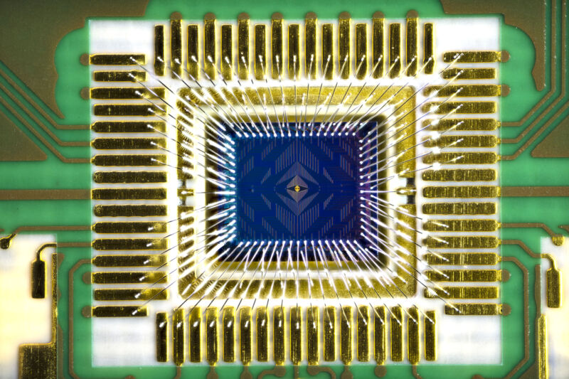

Most researchers have never seen a quantum computer. Winfried Hensinger has five. “They’re all terrible,” he says. “They can’t do anything useful.” In fact, all quantum computers could be described as terrible. Decades of research have yet to yield a machine that can kick off the promised revolution in computing. But enthusiasts aren’t concerned —and development is proceeding better than expected, researchers say. “I’m not trying to take away from how much work there is to do, but we’re surprising ourselves about how much we’ve done,” says Jeannette Garcia, senior research manager for quantum applications and software at technology giant IBM in San Jose, California.
Hensinger, a physicist at the University of Sussex in Brighton, UK, published a proof of principle in February for a large-scale, modular quantum computer1. His start-up company, Universal Quantum in Haywards Heath, UK, is now working with engineering firm Rolls-Royce in London and others to begin the long and arduous process of building it. If you believe the hype, computers that exploit the strange behaviours of the atomic realm could accelerate drug discovery, crack encryption, speed up decision-making in financial transactions, improve machine learning, develop revolutionary materials and even address climate change. The surprise is that those claims are now starting to seem a lot more plausible — and perhaps even too conservative.
Justified scepticism
Until now, there has been good reason to be sceptical. Researchers have obtained only mathematical proofs that quantum computers will offer large gains over current, classical computers in simulating quantum physics and chemistry, and in breaking the public-key cryptosystems used to protect sensitive communications such as online financial transactions. “All of the other use cases that people talk about are either more marginal, more speculative, or both,” says Scott Aaronson, a computer scientist at the University of Texas at Austin. Quantum specialists have yet to achieve anything truly useful that could not be done using classical computers. The problem is compounded by the difficulty of building the hardware itself. Quantum computers store data in quantum binary digits called quantum bits, or qubits, that can be made using various technologies, including superconducting rings; optical traps; and photons of light. Some technologies require cooling to near absolute zero, others operate at room temperature. Hensinger’s blueprint is for a machine the size of a football pitch, but others could end up installed in cars. Researchers cannot even agree on how the performance of quantum computers should be measured. Whatever the design, the clever stuff happens when qubits are carefully coaxed into ‘superposition’ states of indefinite character — essentially a mix of digital ones and zeroes, rather than definitely being one or the other. Running algorithms on a quantum computer involves directing the evolution of these superposition states. The quantum rules of this evolution allow the qubits to interact to perform computations that are, in practical terms, impossible using classical computers.
This is where the scepticism about quantum computing begins. The world’s largest quantum computer in terms of qubits is IBM’s Osprey, which has 433. But even with 2 million qubits, some quantum chemistry calculations might take a century, according to a 2022 preprint2 by researchers at Microsoft Quantum in Redmond, Washington, and ETH Zurich in Switzerland. Research published in 2021 by scientists Craig Gidney at Google in Santa Barbara, California, and Martin Ekerå at the KTH Royal Institute of Technology in Stockholm, estimates that breaking state-of-the-art cryptography in 8 hours would require 20 million qubits3. Yet, such calculations also offer a source of optimism. Although 20 million qubits looks out of reach, it’s a lot less than the one billion qubits of previous estimates4. And researcher Michael Beverland at Microsoft Quantum, who was first author of the 2022 preprint2, thinks that some of the obstacles facing quantum chemistry calculations can be overcome through hardware breakthroughs. For instance, Nicole Holzmann, who leads the applications and algorithms team at Riverlane, and her colleagues have shown that quantum algorithms to calculate the ground-state energies of around 50 orbital electrons can be made radically more efficient5. Previous estimates of the runtime of such algorithms had come in at more than 1,000 years. But Holzmann and her colleagues found that tweaks to the routines — altering how the algorithmic tasks are distributed around the various quantum logic gates, for example — cut the theoretical runtime to just a few days. That’s a gain in speed of around five orders of magnitude. “Different options give you different results,” Holzmann says, “and we haven’t thought about many of these options yet.”
References
- Akhtar, M. et al. Nature Commun. 14, 531 (2023) link: https://www.nature.com/articles/d41586-023-01692-9.